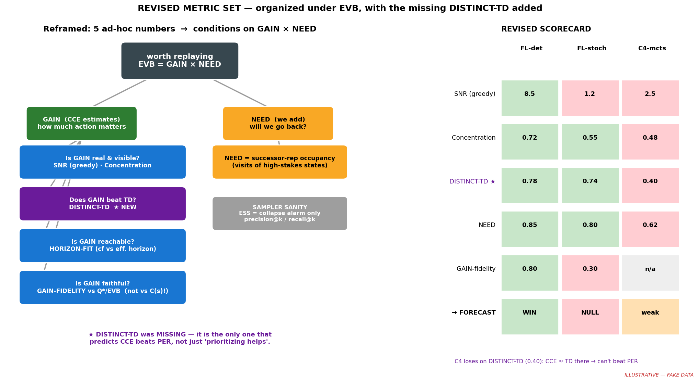
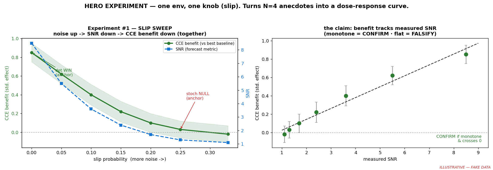
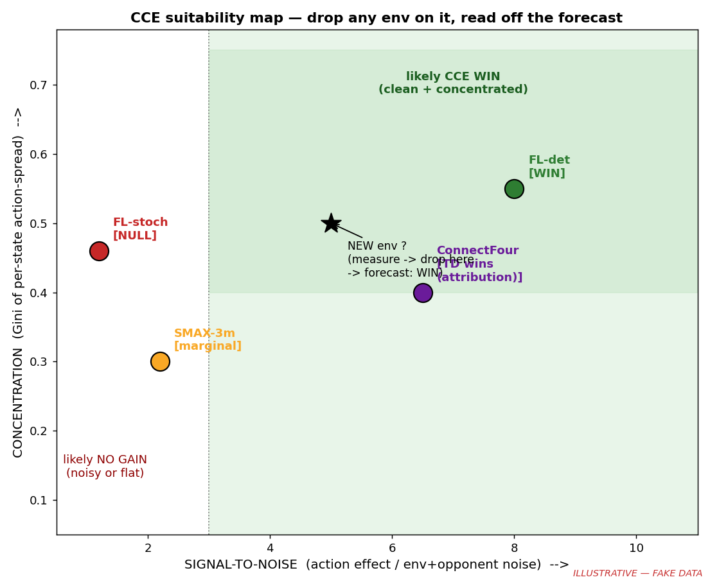

Plain, visual notes. Two papers we deep-read. The clash with our plan. What we change. (All cartoons below are hand-drawn ideas, not real runs.)
TL;DR in one breath
⚑ These are decision tools for US — not paper figures (yet)
Point: understand what makes CCE work so we know what to chase or skip before spending compute. They only need to be roughly right to steer us. If a clean result falls out (esp. the slip sweep below), we can promote it later.
We sent the metric set to three critic agents before locking. They found a real hole and three breaks.
CCE only wins if it picks different moves than TD-error (PER). If they rank the same, CCE is just slow PER. So we add the metric that was missing:
"does CCE agree with stakes?" — but CCE scores by stakes. True by construction. Fix: compare CCE only vs ground truth (Q*, EVB), never vs itself.
"noise" mixed env noise + our own exploration noise. Turn ε down → metric flips. Fix: roll out greedy after the forced action → env noise only.
CCE is supposed to be spiky on the few forks. Low ESS isn't a fault. Fix: ESS = collapse alarm only; use precision/recall@k.
Not 5 random numbers. All are conditions on EVB = GAIN × NEED. CCE estimates GAIN; the metrics say when a GAIN-estimator helps.

GAIN × NEED tree + scorecard. ★ DISTINCT-TD is the new, load-bearing one. Note C4 fails it (0.40) → CCE ≈ TD there → can't beat PER.
4 envs × 3 metrics = a line through 3 dots = fooling ourselves. The honest test is a sweep inside one env: FrozenLake, turn up the slip step by step, watch SNR and CCE's win fall together.

Experiment #1. Cheap, we own the env, and it sits right between our two anchors (det = win, stoch = null). Monotone curve = "noise kills CCE" confirmed. Flat = thesis dead, cheaply.
Four cheap rulers, all from rollouts, meant to forecast "will CCE help in this env?"

Our forecast map (fake data). The two papers mostly leave the axes alone — but add a missing piece and flip one assumption.
"Prioritized memory access explains planning and hippocampal replay," Nature Neuroscience.
They ask the exact question we ask: which memory is worth replaying? Their answer is one clean formula.
How much does fixing this spot change what I do here? Big when learning flips my best action to something better.
= our CCE "stakes" ≈ the action gap
How often, soon, will I actually stand on this spot in the future? (discounted visit count)
= the part CCE has NONE of
Blue = you. Green = goal. Red = deadly trap. Gold = the spot we score.
Every path crosses J, and the move there decides the win.
This is OUR trap. CCE sees huge stakes and over-studies a spot the agent never revisits.
You walk it constantly, but both moves are equal. Nothing to fix.
Need-driven: warm up the path you are about to walk.
Case B is the whole problem. Our stakes ruler = GAIN only. It will light up rare, deadly, never-revisited spots and tell CCE to drill them. Mattar & Daw say: useless, because NEED = 0.
Soft defense: our replay buffer already holds more copies of spots we visit often — so it sneaks in a weak NEED by accident. But it is crude, not the real discounted "will I go there soon."
Fix: add a NEED check = visit-frequency of a spot. Then ask: do CCE's high-stakes spots also get visited? (stakes × visits, not stakes alone.)
"When Does Non-Uniform Replay Matter in Reinforcement Learning?" arXiv:2605.10236.
They asked: when is any fancy (non-uniform) replay worth it vs just sampling evenly? Three knobs decide it.
| Knob | What it is | Their finding |
|---|---|---|
| Replay volume | how many old moves you study per new step (UTD × batch) | Fancy replay helps only when this is LOW. Study a lot → uniform is fine. |
| Recency | how new the studied moves are, on average | Newer helps — but how you get newer matters. |
| Sampling entropy | how spread out your actual draws are | Spread-out (high entropy) wins. Narrow/peaked loses — even at the same recency. |
low entropy · loses coverage
underperforms — even worse than uniform
high entropy · keeps coverage
best of the bunch
Our metric #4 assumed "CCE wins because it concentrates replay on the cliffs — more focus = good." This paper found the opposite sign: concentrated draws hurt.
But here is the catch — two different things were being mixed up:
the target set of high-stakes moves. A property of the task. Fine to be lumpy.
the actual sampling each step. If razor-sharp → lose coverage → hurt.
Reconcile: you can lean toward the cliffs while still drawing smoothly across the whole buffer. Bias, don't spike.
Honest answer: their test bed is not ours.
So treat it as a loud warning, not a law. We must check it ourselves in FrozenLake — and report how spread our draws are, instead of assuming peaky = good.
| Metric | Status | Why / what changes |
|---|---|---|
| 1. SNR noise-normalized action gap |
KEEP — lead | Strongest. Backed by action-gap theory + ReLo + noisy-TV. The det→stoch flip is our headline experiment. |
| 2. Stakes concentration Gini over states |
KEEP + | Keep, but also report entropy / top-k mass (field-standard). This is a task property — lumpy is OK here. |
| 3. Score↔Stakes does CCE point right? |
KEEP | Good. In FrozenLake, also compare against EVB = Gain×Need, not just the action gap. |
| NEW · NEED check visit-frequency of high-stakes spots |
ADD | From Paper 1. Catch the "Case B trap": high stakes but never revisited = not worth it. |
| 4. Replay-focus "concentration = good" |
REWORK | From Paper 2. Drop "peaky = good." Instead measure top-k OVERLAP (are the drilled spots the right ones?) and report spread (ESS / entropy) as a risk flag. |
One line: CCE measures GAIN well. We bolt on a NEED check, and we stop confusing "lean toward the cliffs" with "spike all draws on the cliffs."